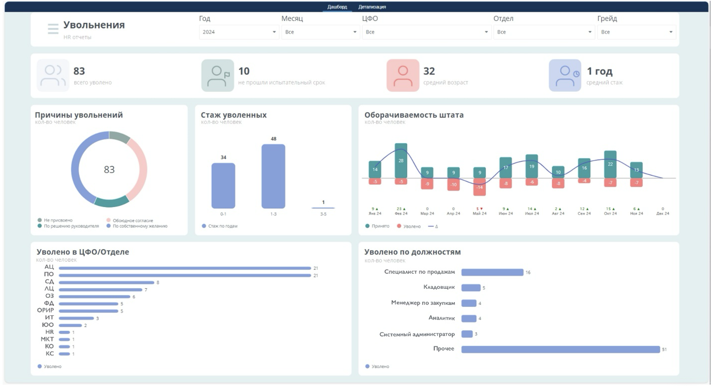
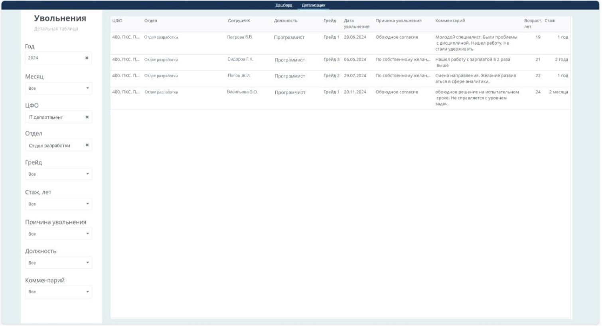
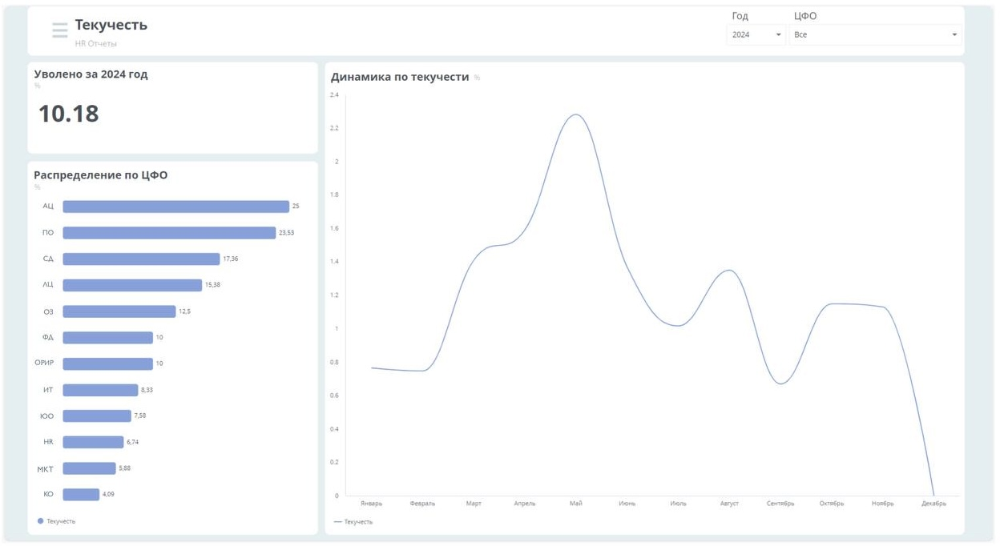
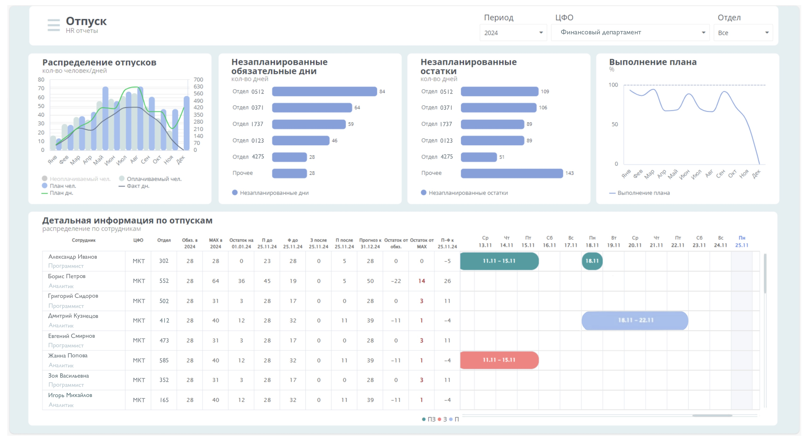
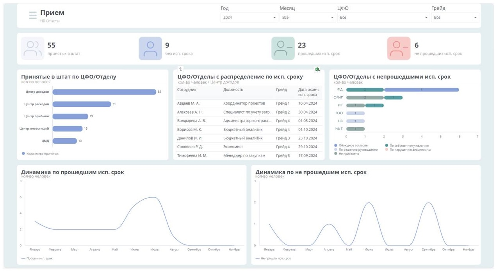
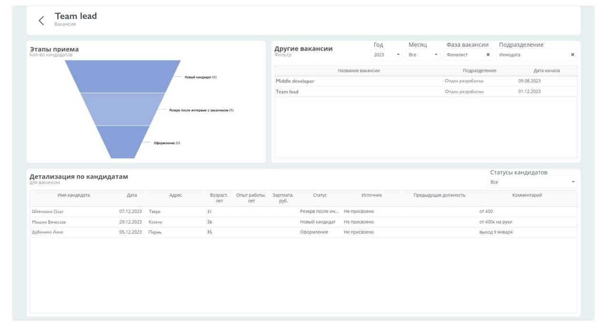

Демонстрационные проекты
Пресейловые активности РАМАКС
После ухода SAP с российского рынка компания начала переход на отечественные BI-решения. Команда аналитики изучала продукты на рынке и тестировала их в рамках пилотных проектов. Одним из выбранных инструментов стала платформа Visiology.
После прохождения вендорского обучения было принято решение реализовать демонстрационный BI-кейс для ритейла.
Цель проекта
Разработать демонстрационный BI-кейс для ритейла, показывающий возможности платформы Visiology и подход к сквозному анализу бизнес-показателей.
Роль в проекте
В рамках проекта я отвечал за подготовку данных и BI-моделирование, разработку дашбордов в Visiology и реализацию сквозного аналитического сценария, а также за демонстрацию решений
Зона ответственности
Проработка бизнес-кейса
Miro
• Участие в обсуждениях и продумывании кейса
• Анализ пользовательских сценариев
• Совместная работа с командой
Структура данных под BI-кейc
PostgreSQL, Visiology
• Проектирование структуры данных под бизнес-сценарий
• Генерация и загрузка mock-данных
• Подготовка витрин и таблиц для аналитики
BI-моделирование и SQL
Visiology, SQL
• Построение модели данных
• Написание SQL-запросов
• Формирование аналитических слоёв
Разработка дашбордов
Visiology v2
• Разработка 5 связанных дашбордов
• Реализация drill-down и навигации между экранами
• Наследование фильтров между дашбордами
Кастомная интерактивная логика
JS(visApi, Highcharts)
• Реализация кастомных фильтров и переходов
• Работа с visApi
• Кастомизация визуализаций
Коммуникация и доработка
• Демонстрация дашбордов руководству
• Сбор обратной связи
• Итеративная доработка решения
Результаты
• Реализован демонстрационный BI-кейс для ритейла на платформе Visiology
• Построена модель данных и витрины для сквозного анализа бизнес-показателей
• Разработан набор из 5 связанных интерактивных дашбордов
• Реализована навигация между дашбордами с наследованием фильтров
• Продемонстрированы возможности платформы для анализа причин снижения выручки
• Кейс используется как пример BI-решения и демонстрации платформы
Кейс
В следующих блоках показан функционал дашбордов:
Продажи
Дашборд предназначен для анализа продаж и выручки с возможностью детализации по периодам, географии и категориям товаров.
Реализованные возможности:
- Агрегированные KPI по заказам и выручке с динамикой к предыдущему периоду или сезону
- Drill-down в распределениях с вынесением непопулярных значений в «Прочее»
- Кастомный treemap с цветовой индикацией отклонений выручки
- Многоуровневая детализация динамики продаж (год → месяц → категории) и передача контекста и фильтров между виджетами и глобальными фильтрами
- Переход на дашборд "Основные показатели" через Treemap с передачей фильтров
Увольнения
Дашборд показывает ключевые метрики по увольнениям:
- Общее количество уволенных сотрудников.
- Число сотрудников, не прошедших испытательный срок.
- Средний возраст и стаж уволенных.
- Разделение причин увольнений (круговая диаграмма) и распределение по стажу, ЦФО, отделам и должностям.
Фильтры и детализация данных по таблицам помогают проводить глубокий анализ, включая переход на лист с расширенной таблицей.
Текучесть
Дашборд позволяет анализировать показатель текучести кадров в компании:
- Основной числовой показатель текучести.
- Горизонтальная диаграмма с распределением текучести по ЦФО.
- График, показывающий динамику текучести по месяцам.
Функционал фильтрации доступен по году и ЦФО.
Отпуск
Дашборд предоставляет подробную информацию об отпускной активности сотрудников:
1) Смешанная диаграмма:
- Столбцы отображают количество сотрудников с неоплачиваемыми, оплачиваемыми и плановыми отпусками.
- Линии показывают плановое и фактическое количество дней отпуска помесячно.
2) Горизонтальные диаграммы:
- Количество незапланированных обязательных дней в году.
- Количество незапланированных остатков по годам (распределение по отделам).
3) График выполнения плана:
- Процент выполнения плана отпусков по месяцам.
4) Диаграмма Ганта:
- В левой части — таблица с детальной информацией о сотрудниках (имя, должность, ЦФО, количество обязательных и остаточных дней, план и фактическое использование отпуска).
- В правой части — диаграмма Ганта, отражающая отпускные периоды каждого сотрудника:
- Серая полоса: Запланированный, но не использованный отпуск.
- Красная полоса: Незапланированный отпуск.
- Зеленая полоса: Запланированный и отгулянный отпуск в соответствии с планом.
Дашборд поддерживает фильтрацию по году, ЦФО и отделу.
Вакансии
Дашборд предоставляет полную информацию о состоянии вакансий и их кандидатах:
1) Ключевые показатели:
- Количество открытых вакансий, множественных вакансий, с истекающим сроком и просроченных.
2) Воронка: Отображает количество вакансий на разных этапах.
3) Горизонтальные диаграммы:
- Количество кандидатов по вакансиям.
- Количество множественных вакансий по подразделениям.
4) Круговые диаграммы:
- Процент кандидатов с распределением по источникам.
- Процент вакансий с распределением по статусам.
5) Фильтры: год, месяц и подразделения.

При клике на воронку открывается таблица со списком вакансий.
При выборе вакансии в таблице происходит переход на отдельный лист с детальной информацией:
1) Воронка кандидатов: Этапы обработки кандидатов по выбранной вакансии.
2) Фильтруемая таблица вакансий: Позволяет выбрать год, месяц, фазу вакансий и подразделение для детализации, чтобы отобразить список других вакансий, а при клике на эту таблицу дашборд выстраивается в соответствии с выбором.
3) Детализированная таблица кандидатов: Подробные данные о кандидатах, связанных с выбранной вакансией.
